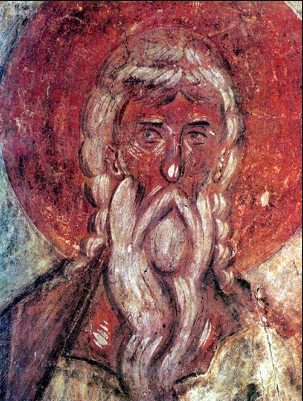

Феофан Грек
Крупнейший византийский иконописец, повлиявший на русскую живопись.
Феофан Грек (ок. 1340 – после 1405) – выдающийся византийский иконописец, который оказал огромное влияние на развитие русской живописи. Работал в Новгороде и Москве, создавая фрески и иконы.
Его стиль характеризуется экспрессивностью и глубоким духовным содержанием, что сделало его работы важной частью культурного наследия.
